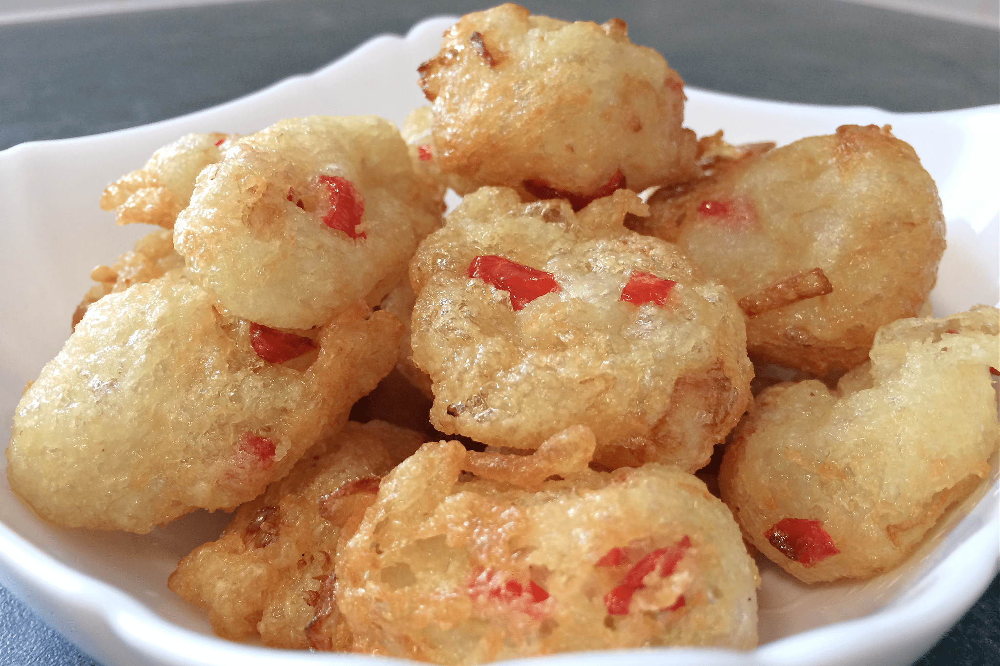

Ojojo

Description
Ojojo (Water yam balls) is a very delicious Nigerian dish/snack.
They are made from grated water yam, onions and peppers. It can be enjoyed first thing in the morning or just as a snack or side dish. It is very simple to make.
Ingredients
- Water yam
- Scotch bonnet peppers
- Onion
- Crayfish (Optional)
- Salt
- Vegetable oil
Steps
- Peel, wash and grate water yam
- Transfer grated water yam into a bowl and add chopped onions and peppers
- Add crayfish (optional)
- Mix well and add some salt to taste
- Heat a generous amount of oil in a pan or deep fryer
- With a wooden spoon, work in the mixture by stirring vigorously
- Turn heat down to medium before frying
- With your hands or table spoon, scoop ojojo mix into oil for frying
- Use a perforated spoon to scoop ojojo balls from oil(at a desired texture) onto a plate dressed with napkins
- Serve
Back to Odin-Recipes